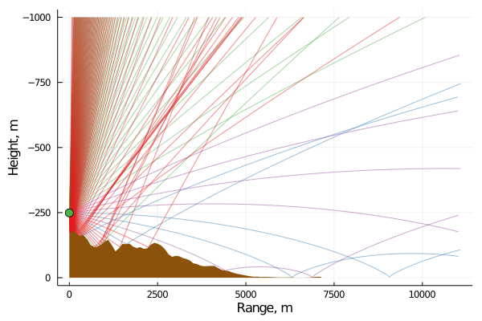
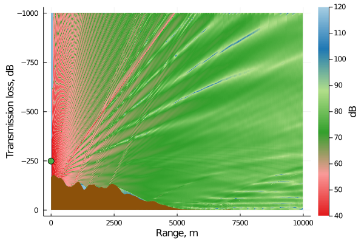

Wind turbine noise propagation
In this example, we will model a real case. A wind turbine is positioned on the top of a ridge. The wind turbine hub height is 80 m. We need to prepare input files as follows:
- elevation file
- sound speed profile file
Read elevation and sound speed files
Assume that we already have elevation and sound speed profile files in text files. The structure of these files are [range, elevation] and [height, sound speed]. We can read to Julia using DelimitedFiles package.
using DelimitedFiles
# read elevation and sound speed files.
elv = readdlm("./temp/elevation.txt") # [range(km), elevation (m)]
ssp = readdlm("./temp/ssp.txt") # [height(m), sound speed(m/s)]Point source 100 Hz at 80 m above ground level
Because the hub height is at 80 m above the ground level, thus the absolute source height is added the ground elevation value. In this case, it is 169 m.
source = Source(
frequency = 100,
height = -80 + (-169) # 169 is ground level
)Receiver
Similar to previous examples, we will analyse for a height of 1000 m and a range of 10 km with resolution is 1 m both directions.
receiver = Receiver(
depth_point = 1001,
range_point = 10001,
depth = Vec2(-1000f0,0f0),
range = Vec2(0f0,10f0)
)Terrain geometry
Input elevation files to 2D vector Vec2.
terrain = Terrain(
interp_type = "C",
profile = (Vec2(elv[:,1],elv[:,2]))
)Boundary condition
The boundary conditions are similar as previous examples.
Zc = 12.81 + 11.62im
Theta, Rmag, Rphase = R_coeff(Zc;len=100)
brc = Vec3(Theta,Rmag,Rphase)
trc = Vec3([0f0,45f0,90f0],[0f0,0f0,0f0],[0f0,0f0,0f0])
reflection = Reflection_Coeff(
top_coeff = trc,
bottom_coeff = brc
)Sound speed profile
We just need to read sound speed profile to 2D vector Vec2. Note in the case our wind profile is relatively simple, we can input directly to here instead of preparing a text file of sound speed profile.
sspl = Vec2(ssp[:,1],ssp[:,2]) # case 1
ssp = SSP(sound_speed_profile= sspl)Analysis
If you are not familiar with below set-up, please look back previous examples.
opt = Analysis(
filename = "RealCase_Bellhop_f100",
analyse = "CG",
option1 = "CFW",
option2 = "F*",
num_ray = 1601,
alpha = Vec2(-80.0f0,80.0f0),
box = Vec2(10f0,1000.0f0),
step= 0
)Create input files
Environment(opt,source, receiver,ssp,terrain,reflection)Run Bellhop
fn= opt.filename
filename = "temp\\$fn"
run_bellhop = `bellhop $filename`
@time run(run_bellhop)Results
Waiting for 29.4 seconds, here is our results!
p1 = PlotRay("$filename.ray",
xlabs = "Range, m",
ylabs = "Height, m")
plot!(p1,elv[:,1]*1000,elv[:,2],
lw=0,fill = 0, color = "#8c510a",legend = false)
yflip!(true)
scatter!(p1,[0], [source.height],
markersize = 6, color = "#4daf4a")
#savefig(p1,"ray_real.png")
Transmission loss field
p2 = PlotShd("$filename.shd";
xlabs = "Range, m",
ylabs = "Transmission loss, dB",
cblabs = "dB",
climb = (40,120))
plot!(p2,elv[:,1]*1000,elv[:,2],
lw=0,fill = 0, color = "#8c510a", legend = false)
yflip!(true)
scatter!(p2,[0], [source.height],
markersize = 6, color = "#4daf4a",
label = "Source")
#savefig(p2,"trans_real.png")